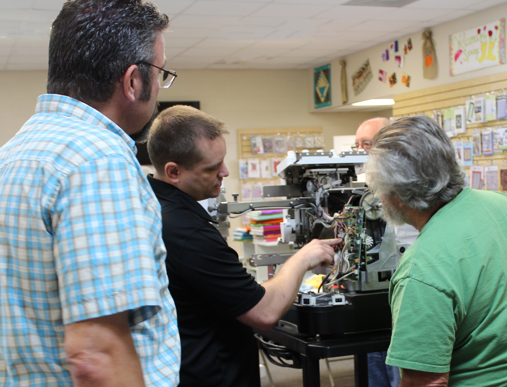
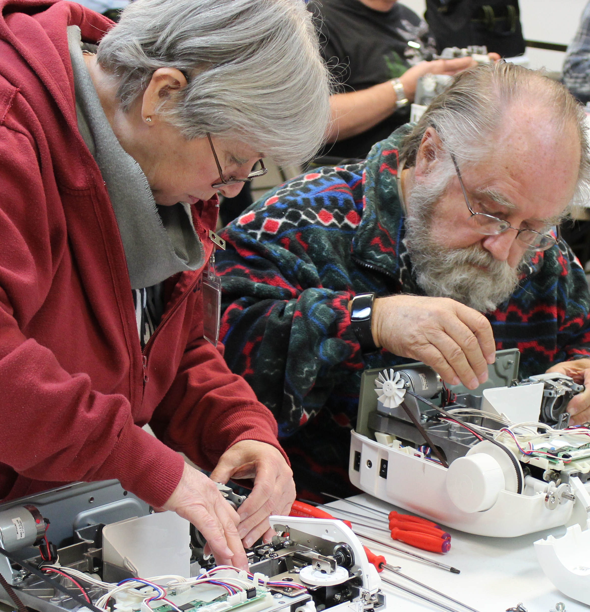
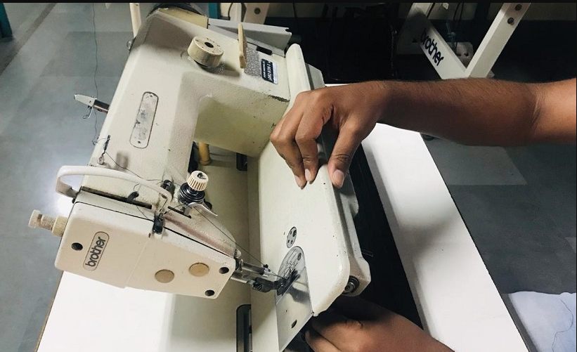
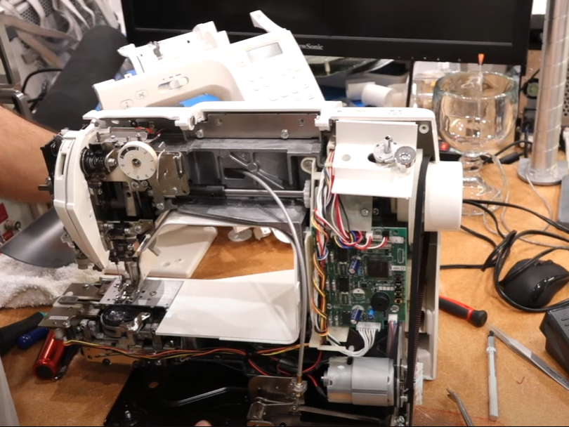
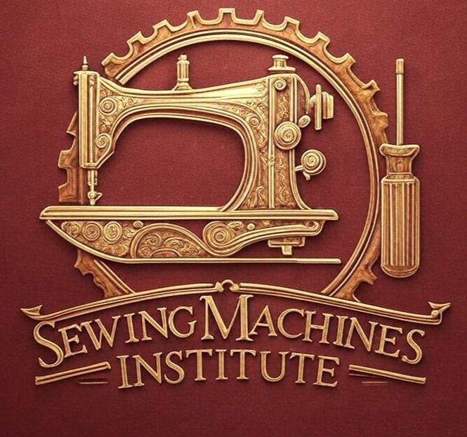

Master the Machine.
Preserve the Craft.
There is a rhythmic satisfaction in a sewing machine that hums perfectly. At the Institute, we pull back the curtain on the mechanics of sewing—turning “broken” into “beautiful” one gear at a time. Whether you're maintaining an heirloom, building self-sufficiency, or launching a respected trade, there is a place for you at our bench.

What the Institute Stands Against
To truly stand for craftsmanship, a brand must know what it opposes. We stand against throwaway culture, secret-keeping, and months-long repair queues that hold makers back.
We Oppose Planned Obsolescence
We reject disposable culture. We don’t believe in “expired” tools. We believe in machines that outlive us, provided they have a steady hand and proper calibration to guide them.
We Oppose the “Black Box” Mentality
Your machine shouldn't be a corporate mystery. Knowledge shouldn't be gatekept behind brand badges. We pull back the curtain on every gear, cam, and looper so you own your bench.
We Oppose the Eight-Week Queue
Six weeks is too long for a creative heart to be on hold. We believe the person best equipped to keep your machine running smoothly is the person sitting right in front of it.
We Oppose Stuffy Academics
Mastery doesn't have to be intimidating. We trade the sterile classroom for the artisan’s workshop, where technical skill is warm, grounded, communal, and immediately applicable.
Who Belongs at the Sewing Machines Institute?
Whether you inherited your grandmother's vintage Singer, run a bustling homestead, or want to launch a recession-proof trade, our curriculum meets you where you are.
The Heirloom Hobbyist
You love sewing as a creative outlet, but when the tension slips or the bobbin jams, you dread an 8-week wait at the repair shop. We give you the confidence to open the chassis, diagnose strange sounds, and keep your machine purring.
- Protect irreplaceable vintage & all-metal family heirlooms
- Fix bird's nests, thread jams & looping stitches in minutes
- Save hundreds in ongoing maintenance and dealer diagnostic fees
The Modern Homesteader & DIYer
You value scratch-cooking, gardening, and fixing things with your own two hands. A sewing machine is an essential household tool for workwear, canvas, and gear. You refuse to depend on a fragile, vanishing repair network.
- Total self-reliance for heavy canvas, leather, and denim gear
- Hands-on workshop training with real technician tools
- Understand gear timing, motor drives, and lubrication science
The Aspiring Pro & Retiree
There is a nationwide crisis in sewing machine repair. Old technicians are retiring, leaving entire counties without a repairman. Turn your mechanical aptitude into a respected, high-demand neighborhood business.
- Earn ~$110 per 2-hour standard machine tune-up
- Zero corporate gatekeeping • Service 99% of all brands
- Low overhead: run from a home workshop, garage, or storefront
Why Letting a Machine Sit Costs You More
In the world of mechanics, neglect is a slow-motion breakdown. The hidden costs of waiting are measured in lost time, dried lubricant, and escalating service fees.
Vanishing Repair Shops
When local shops close, your machine has to travel two hours in the trunk of a car just to get inspected. Keep the care right where it belongs: on your own workbench.
Two-Month Waiting Lists
Waiting for someone else's schedule shouldn't be part of your creative process. Don't let a stranger's backlog hold your quilts, garments, and heirlooms hostage.
Jammed Paperweights
There is a specific heartbreak in owning a beautiful machine that won't stitch. You didn't buy a paperweight; you bought a gateway to making. Let's learn its mechanical language.
Modern Shops Refusing Vintage
Modern shops call all-metal vintage machines “obsolete.” We call them heirlooms. They don't need a motherboard; they just need an expert steady hand.
$150 For a 20-Minute Tweak
Expertise shouldn't be a recurring tax on your passion. Once you understand the heartbeat of your machine, you stop paying for recurring fixes and start owning your craft.
Shortage of Technicians
Demand for sewing machine repair is booming while technician supply is shrinking. Waiting to learn means leaving a wide-open local market untapped.
Universal Mechanics vs. Brand Gatekeeping
Why choose the Institute over a manufacturer’s dealer school or amateur YouTube clips? We teach the timeless engineering principles that govern 99% of all machines.
| Training Approach | Typical YouTube / Hobbyist Blogs | Sewing Machines Institute (FSMI) |
|---|---|---|
| Core Focus | Brand-specific “hacks” or single one-off fixes for specific models. | Universal Mechanical Logic: Understand the timing, clearances, and physics across all 99% of makes. |
| Depth of Wisdom | Amateur trial and error; unverified online speculation. | 30 Years of Daily Bench Wisdom: Master trade secrets, sound diagnostics, and tactile feel passed down. |
| Brand Access | Gatekept by dealer networks who only want you servicing their brand. | Brand-Agnostic: Singer, Bernina, Brother, Janome, Juki, Pfaff, Husqvarna Viking, vintage or computerized. |
| Machine Philosophy | “It's cheaper to throw it away and buy a plastic replacement.” | Preservation Over Replacement: We honor the integrity of steel, gears, and craftsmanship built to last. |
| Independence | You still need to take it to a repair shop for anything serious. | Total Mastery: You become the expert for your workshop, your guild, or your community. |
Step Up to Your Bench
From 5-day immersive institutes in Central Texas to self-paced correspondence study, choose the pathway that fits your goals.
5-Day Live Hands-On Institute
Tuesday through Saturday in Temple, Texas. Intensive workbench instruction taking you from absolute basics to advanced timing, tension calibration, computerized motherboards, and sergers.
- 3 Brand-New Machines Included: Yours to take home to practice on and build your shop.
- Master Technician Tool Kit: Complete professional screwdrivers, gauges, timing lights & lubricants.
- Small Class Size: Guaranteed 1-on-1 mentorship with Jeremiah Trumble at your personal bench.
- Flexible 4-Part Payment Plan: Reserve your seat now and budget your tuition comfortably.

Tuition & Inclusions:
Includes full bench tuition, 3 take-home machines, technician starter kit, complete laboratory manual, and lifetime direct instructor technical support.
Complete Online Correspondence Course
The renowned 16-lesson FSMI home study program. Master sewing machine repair at your own kitchen table or home workshop with our step-by-step technical blueprints.
- 16 Comprehensive Modules: From hook timing and tension assemblies to motor speed controllers.
- ProTraining 1 & 2 Video Library: Hours of detailed close-up workbench diagnostic demonstrations.
- Lifetime Bench Reference: Keep the blueprints and timing charts by your machine forever.

One-time tuition with zero recurring subscriptions. Complete certification program delivered directly to your home.
Industrial On-Site Plant Training
Tailored for garment manufacturers, upholstery shops, automotive interiors, sailmakers, and military contractor factories.
Jeremiah Trumble travels directly to your facility to train your plant mechanics on heavy-duty walking foot lockstitch, double-needle, cylinder arm, and automated bartack machines.

Zero Factory Downtime
Empower your in-house mechanics to eliminate multi-week factory production delays.
Multi-Needle & Combo Embroidery Training
Master the intricate mechanics, optical sensors, needle bar selection mechanisms, and computerized stepper motors of modern embroidery equipment.
Covers Brother, Baby Lock, Tajima, Janome, and commercial multi-head machines. Learn high-speed rotary hook clearance, bobbin case tension balancing, and electronic board troubleshooting.

Advanced Digital Diagnostics
Bridge mechanical gears with digital stepper circuits with confidence.
Free 7-Step Machine Maintenance Course
Get immediate access to the foundation of sewing machine care. Demystify the 7 core checkpoints every maker and technician must know before ever calling a repair shop.

Start Your Mastery Today
Zero cost. Zero obligations. A gift from our Central Texas workbench to yours.
Technician Earnings Estimator
With standard machine service averaging ~$110 for a straightforward 2-hour clean, oil, and tune, see what a neighborhood bench can produce.
Live Bench Immersion Schedule
Due to our commitment to 1-on-1 mentorship at individual workbenches, class sizes are strictly capped. Claim your seat before sessions fill.
| Session Dates | Program Format | Location | Seat Availability | Action |
|---|---|---|---|---|
| March 17 – 21, 2026 | 5-Day Live Master Technician | Temple, TX Bench Studio | 2 Seats Left | Reserve Seat |
| April 14 – 18, 2026 | 5-Day Live Master Technician | Temple, TX Bench Studio | 4 Seats Left | Reserve Seat |
| May 12 – 16, 2026 | 5-Day Live Master Technician | Temple, TX Bench Studio | 5 Seats Left | Reserve Seat |
| June 16 – 20, 2026 | 5-Day Live Master Technician | Temple, TX Bench Studio | Open Registration | Reserve Seat |
Inside the Temple, Texas Workshop
Real tools, real machines, and master craftsmanship. No sterile lecture halls—just hands covered in grease and minds tuned to mechanics.
Master Mentorship
Jeremiah Trumble breaking down rotary hook timing and looper clearance on the live studio floor.
Hands-On Workbench
Each student has their own dedicated workbench equipped with professional lighting, meters, and tools.
Precision Timing
Calibrating thread take-up levers, shuttle races, and feed dog height to exact factory tolerances.
Meet Your Mentors
The Encouraging Master persona was forged through 30 years of hands-on daily repair, passing down a legacy of mechanical empowerment.
Jeremiah Trumble
Master Technician & Lead Instructor30+ years servicing mechanical, computerized, and industrial machines. Renowned across Texas for his patient, practical, “no-fluff” bench coaching.

Dr. David Trumble
Co-Founder & Curriculum ArchitectPioneered the brand-agnostic teaching methodology that has successfully trained over 5,000 technicians worldwide since 1992.
Questions from the Bench
Everything you need to know about preparing for class, equipment, and starting your repairs.
Claim Your Seat at the Bench
Questions about upcoming dates or our correspondence course? Call us directly or drop us a line below.